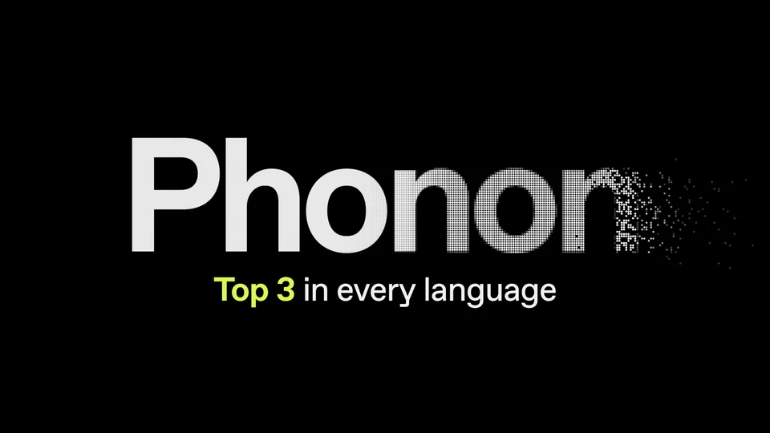
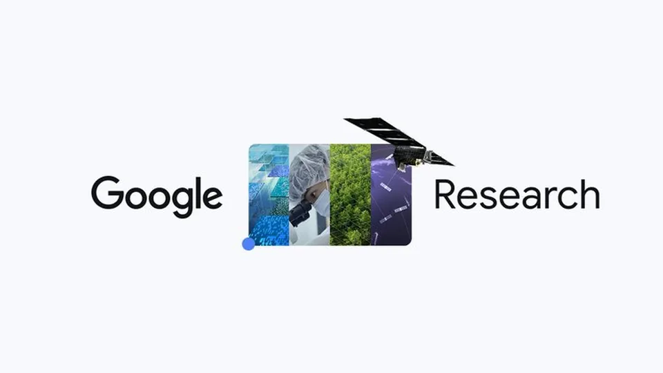

방금 보신 영상의 기사 전문과 오늘 올라온 기사를 아래에 모아 두었습니다.
오늘의 AI,
내 일에 쓰는 법까지
검색 말고 SHIFT. 매일 AI 소식과 가입 없는 무료 도구,
따라 하는 튜토리얼을 한곳에 둡니다.검색 말고 SHIFT.
AI 소식·무료 도구·튜토리얼을 한곳에 둡니다.
맞는 튜토리얼과 무료 도구를 모아 보여 드립니다.
내 직무로 바로 가기
설치 없이 쓰는 무료 도구무료 도구
가입 없이 브라우저에서 바로 쓸 수 있습니다.
따라 하는 튜토리얼
하는 일에 맞춰 골라 보세요. 프롬프트는 복사해서 그대로 쓰면 됩니다.하는 일에 맞춰 골라 보세요
 입문Claude Code · Claude유튜버·크리에이터가 깔아 두면 좋은 AI 스킬 7개, 내 말투 학습·훅·썸네일·영상 제작까지STEP 8 · 스킬·MCP
입문Claude Code · Claude유튜버·크리에이터가 깔아 두면 좋은 AI 스킬 7개, 내 말투 학습·훅·썸네일·영상 제작까지STEP 8 · 스킬·MCP 중급Claude Code · Claude연구자·대학원생이 깔아 두면 좋은 AI 스킬 7개, 문헌 조사·통계·논문 쓰기·동료 평가까지STEP 8 · 스킬·MCP
중급Claude Code · Claude연구자·대학원생이 깔아 두면 좋은 AI 스킬 7개, 문헌 조사·통계·논문 쓰기·동료 평가까지STEP 8 · 스킬·MCP 입문ChatGPT · 제미나이AI 이미지로 상세페이지·썸네일 시안 만들기, 올리기 전 표시와 저작권 확인까지 6단계STEP 6 · 영상·이미지
입문ChatGPT · 제미나이AI 이미지로 상세페이지·썸네일 시안 만들기, 올리기 전 표시와 저작권 확인까지 6단계STEP 6 · 영상·이미지 중급n8n · 엑셀·시트구글 시트에 문의가 쌓이면 AI가 답장 초안을 지메일에 써 두게, n8n 두 번째 자동화 6단계STEP 6 · 자동화
중급n8n · 엑셀·시트구글 시트에 문의가 쌓이면 AI가 답장 초안을 지메일에 써 두게, n8n 두 번째 자동화 6단계STEP 6 · 자동화 입문Claude Code코딩 몰라도 되는 클로드 코드 첫 설치와 첫 작업, 7단계STEP 7 · 자동화
입문Claude Code코딩 몰라도 되는 클로드 코드 첫 설치와 첫 작업, 7단계STEP 7 · 자동화 입문ChatGPT · Claude중고 거래·블로그·AI에 사진 올리기 전, 위치 정보 지우는 5단계STEP 5 · 보안·개인정보
입문ChatGPT · Claude중고 거래·블로그·AI에 사진 올리기 전, 위치 정보 지우는 5단계STEP 5 · 보안·개인정보 입문ChatGPT · ClaudeAI가 쓴 티 덜 나게 고치는 6단계, 쓰기 전 지시부터 소리 내어 읽기까지STEP 6 · 콘텐츠·커리어
입문ChatGPT · ClaudeAI가 쓴 티 덜 나게 고치는 6단계, 쓰기 전 지시부터 소리 내어 읽기까지STEP 6 · 콘텐츠·커리어 입문ChatGPT · Claude사진·스캔본·PDF 속 글자를 AI에 넘기는 6단계, 무료 도구로 서버에 안 올리고STEP 6 · 업무
입문ChatGPT · Claude사진·스캔본·PDF 속 글자를 AI에 넘기는 6단계, 무료 도구로 서버에 안 올리고STEP 6 · 업무최신 AI 뉴스오늘의 AI 뉴스
원문을 읽고 쓴 기사입니다. 판정 꼬리표는 편집부가 붙였습니다.
 보안·안전지켜보세요포스트맨 데스크톱, 클로드 코드·코덱스 플러그인 자동 설치 의혹…깃허브 이슈 열려11월 5일
보안·안전지켜보세요포스트맨 데스크톱, 클로드 코드·코덱스 플러그인 자동 설치 의혹…깃허브 이슈 열려11월 5일 모델·제품지켜보세요제미나이·구글 검색, K-12 학생 계정은 학교 관리자가 켜기 전까지 꺼진다고 구글 밝혀11월 5일
모델·제품지켜보세요제미나이·구글 검색, K-12 학생 계정은 학교 관리자가 켜기 전까지 꺼진다고 구글 밝혀11월 5일 정책·저작권지켜보세요앱스토어 연령 등급에 '데이팅과 관계' 항목 신설, 가상 동반자 기능 앱도 최소 18+11월 5일
정책·저작권지켜보세요앱스토어 연령 등급에 '데이팅과 관계' 항목 신설, 가상 동반자 기능 앱도 최소 18+11월 5일앤트로픽 플래시프루브, AI 답변이 약속한 모델에서 나왔는지 암호로 증명한다
앤트로픽(Anthropic)이 AI 답변이 개발사가 말한 바로 그 모델에서 나왔는지 영지식 증명으로 확인하는 프로토타입 플래시프루브(FlashProve)를 오픈소스로 공개했습니다. H100 한 대에서 초당 약 110토큰의 증명을 만들지만 아직 연구용입니다.

Phonon TTS, 65MB 안팎 온디바이스 음성 합성은 첫 소리까지 28ms
Phonon TTS는 약 65MB와 75MB 크기의 온디바이스 음성 합성 모델입니다. 서버 없이 CPU에서 돌고 첫 소리까지 28ms가 걸린다고 하지만, 지원 언어는 영어·프랑스어·독일어·스페인어·포르투갈어이고 한국어는 없습니다.

구글 Agile Deliberation, 주관적인 기준의 이미지 분류기를 AI와 함께 다듬는다
구글 리서치(Google Research)가 '건강한 음식'처럼 기준이 사람마다 다른 개념의 이미지 분류기를 만드는 방법 Agile Deliberation을 소개했습니다. 사용자가 프롬프트를 직접 고치지 않고 AI가 보여 주는 애매한 이미지에 답하며 기준을 다듬습니다.
포스트맨 데스크톱, 클로드 코드·코덱스 플러그인 자동 설치 의혹…깃허브 이슈 열려
포스트맨(Postman) 데스크톱 앱이 클로드 코드와 코덱스에 자체 플러그인을 사용자 동의 없이 설치했다는 보고가 깃허브 이슈로 올라와 있습니다. 보고자의 로그와 설정 파일 기록, 11월 3일 추가 재현 댓글을 정리했습니다.